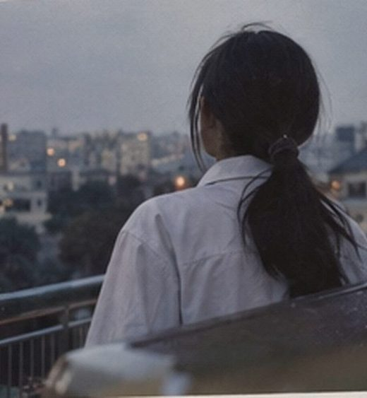

还有两天
东西怎么都收不完，画夹又重，我到现在还在想要不要托运。方野下午跑来问我去了南江是不是就不认人了，我说等我真坐上车再讲。她说我最近讲话很欠，我也没法反驳。
我爸今天又没回来吃晚饭，厨房里倒放着一小盒草莓，压坏了几颗。以前他上夜班也会顺手买，永远挑不好，还要问我怎么不吃。现在我连说句谢谢都觉得怪，一开口就像前几天没吵过一样。

下午，阳台边下午收东西又翻出初一那张获奖证书，边都黄了。我说扔了吧，我妈硬是不让，说以后说不定还想看。她特别爱留这些，我小学作文本到现在居然还有两本。
学费的事还是没说清楚。先去报到吧，到了再看。
车票夹在钱包最里面，K203，19:04。我很少一个人坐这么久的车，刚看到票的时候有点慌，现在看久了也就那样，23号到了总得上车。
方野：你晚上不是还说不带画夹
白昼：又改了……老师说第一周可能看原作
方野：那你通知书别又塞画夹里，上次找半天
白昼：知道了知道了，透明袋